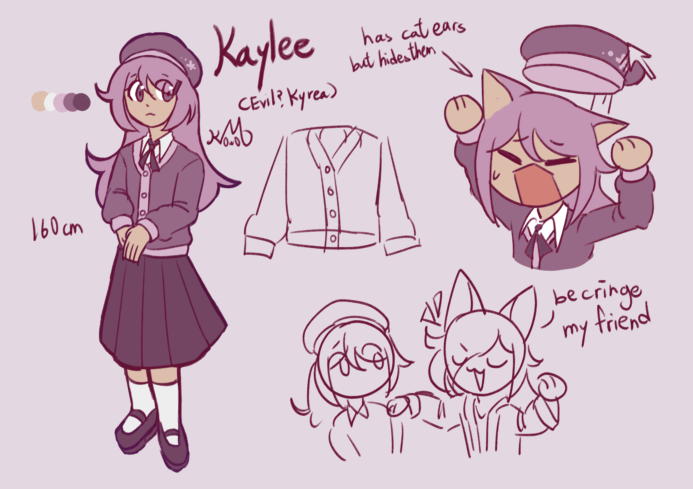

"A good child does not waste their time on meaningless hobbies..."

"Kyrea always wished that she has a evil counterpart, a version of herself that is edgy and cool. And by miracle, a rift to another timeline opened up, a world where the people's personalities are opposite to ours. Contrary to what Kyrea wished for, her 'evil' self is just a shy girl who is too afraid of standing out and doing anything that is remotely 'cringe'. Trying to blend in with the crowd, Kaylee believes it is not acceptable to do anything other than fulfilling things, like studying and being a good child. However, she secretly has silly hobbies of her own. Will she learn to open up and accept that part of herself?
Facts about her:
- She hides her cat ears and tail because in where she lived, it is considered informal to show them in public
- She tries to be a model student, but she isn't exactly good at studying
- She tries to be a normal child to blend in, but she didn't manage to make close friends
- Kyrea managed to teach her that "to be cringe is to be free", unfortunately, Kyrea does not enjoy romance stories, I guess they couldn't get along huh
- When I was younger, I made Kyrea have a evil self that is violent and edgy, classic edgy phase
- There was also a phase where I'm afraid of making a Mary Sue and I drew Kyrea having a boring ass design
- So I decided to bring this idea back by making boring ver Kyrea into a new OC
- I named her Kaylee after I looked up common girl names starting with K, it's surprisingly similay to Kyrea